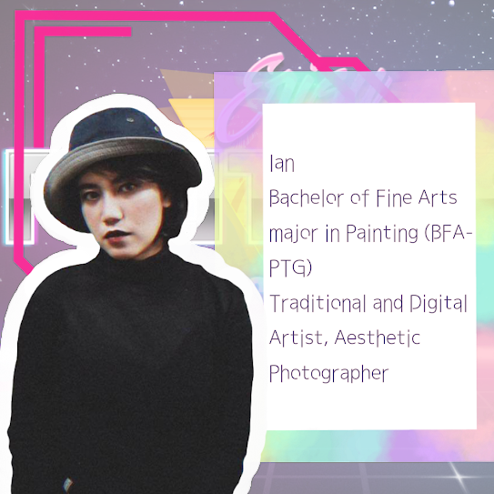
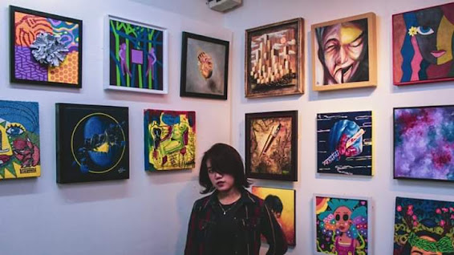
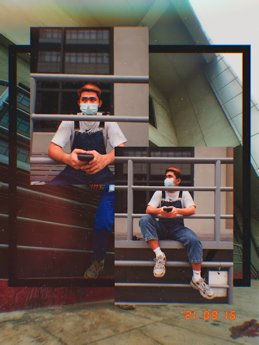
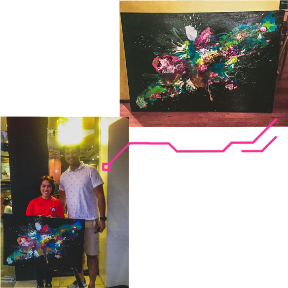

#LetsGetToKnow

Artist – Painting, Digital, and Photography
Favourite Anime:
Another and Tokyo Ghoul
Favourite Manga:
Itou Junji Kyoufu Manga Collection and Meiruko-chan
Other interests:
Aesthetic Fashion
Instagram Account: @artsy.ian

“KLWKN” | Acrylic on Canvass | Dec. 2019
When I say Ian is awesome, I mean it! Did you know that she took up 4 courses including Fine Arts? Albeit not finishing the other 3, the fact that someone can take those courses is already extraordinary by itself.
“I studied Bachelor of Arts in Political Science since they say that I’m really fit to become a lawyer, however, I’m not actually happy with it so I transferred courses, I took up Bachelor of Science in Information Technology (IT) in National Teachers College (NTC), then I enrolled in Polytechnic University of the Philippines (PUP) for Electrical Engineering course. But then again, none of those really made me happy, until I transferred again to EARIST. My mom wanted me to take up Bachelor of Science in Secondary Education (BSE/Educ) but to be honest, I enrolled Bachelor of Fine Arts without the knowledge of my parents and that’s how I get to know art better.”

Event: My Little Masterpiece – April 17-30 | Cevio Art Haus
Ian is a student of Bachelor of Fine Arts, major in Painting (BFA-PTG). She does painting – both traditional and digital and she also does photography, specializing in turning every photograph into aesthetic masterpieces.

Model: Dominic Ricamonte | Sept. 16, 2019
Since Ian is such an amazing person, I wonder, what could be her most memorable achievement? And she never disappoints! She had her painting bought for the first time and by a celebrity! According to her professor, Prof. Cesar Evangelista (famously known in CAFA as “Sir Evang“), artist and celebrity, Gerald Lauron told Ian that his wife have actually chosen the artwork herself!
#SanaAll
As of now, she mostly does digital painting and aesthetic photography. She currently landed a job as Customer Service Representative and is working very hard to reach her goals.

“Mindblown” | Acrylic on Canvas (2×3) | Mar. 8, 2019 | Event: Gawad Pasion Painting Competition – Feb. to Mar. 2019